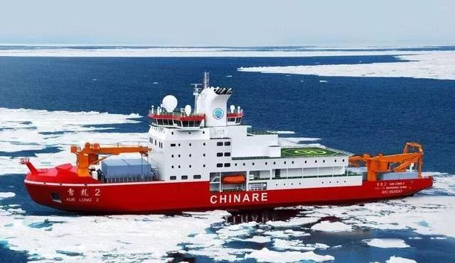
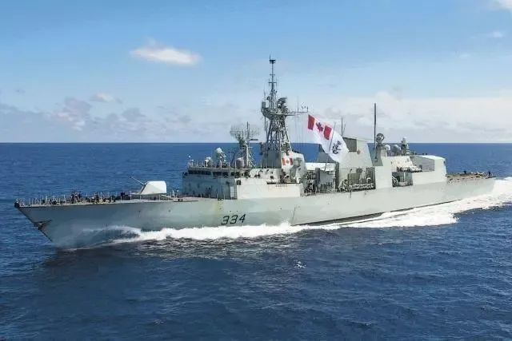
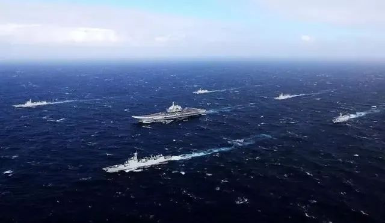

除了轰-6轰炸机在靠近阿拉斯加的白令海上空巡航外，中国船只近期也在北极地区遭遇“险情”？
据《欧亚时报》最新报道，今年7月份，中国最先进的“雪龙2号”破冰船在穿越白令海峡时，曾遭到一艘加拿大军舰的“追逐”。外媒称，此举凸显出了北极地区地缘政治局势的紧张。

（图为雪龙2号破冰船）
据报道，执行此次“追逐”任务的是加拿大的“里贾纳”号护卫舰，该舰当时正在北极地区进行所谓的“监视”任务。值得注意的是，加拿大方面最初并未主动披露里贾纳号对中方船只的追逐事件，而是在媒体询问后才被曝光的。来自开源船只跟踪网站的信息显示，这起不友好的事件，发生在7月13日至17日。
奇怪的是公开信息显示，“里贾纳”号护卫舰13日在白令海关闭了应答器，四天后又出现在了北极海域。美国国防部发言人弗雷德里卡也证实，当时加拿大舰船和中方船只进行了“互动”。但互动并未过激，是“安全且专业的”。

（图为加拿大里贾纳号护卫舰）
尽管如此，这位美国国防部发言人，仍不忘添油加醋地对中方发起无端指责。他声称中国正在越来越多地使用科考船和监视平台，收集加拿大北部的数据。并且根据中方的“规定”，这些数据可以供中国军方使用。
但实际上“雪龙2号”只是中国为了方便在北极科考，建造的一艘破冰船。跟搜集情报并无什么关联，美国和加拿大此举明显又是“抓着鸡毛当令箭”，渲染中国威胁罢了。值得注意的是，美国国防部发言人在回应此事时，还提到了前几日中方军舰在阿拉斯加近海活动的事件。
（图为刚刚穿越台海的蒙特利尔号护卫舰）
实际上，在对中方活动发起无端指责之前，西方国家应该好好反思自己。且不说现在中方破冰船通过白令海峡，就是派遣军舰逼近加拿大，只要没有进入加国领海，也是符合国际法的。要知道就在前几日，加拿大的蒙特利尔号护卫舰就刚刚穿越台湾海峡。加拿大军舰穿越台湾海峡，就是在追随美国，试图介入台海问题。打着自由航行的旗号，干预中国内政，威胁中国主权安全，中方完全可以发起对等反制。
并且当前中国大型水面作战舰艇越来越多，完全有能力在白令海等加拿大关注的海域保持长期存在。但事实上中方的反制行为相当克制，美国国防部发言人也不得不指出，此前中国舰艇一直在国际水域活动。并未像美国那样，派遣军机军舰对他国进行抵近侦察，或者侵入他国12海里领海。

（图为中国海军舰艇编队）
从另一方面来看，此事也暴露出美国加拿大等西方国家正在加强对北极地区的控制，因此对于中俄在地区的活动相当敏感。加拿大皇家海军司令声称，护卫舰在如此高纬度地区航行“相当罕见”，这创下了该级舰艇在白令海峡以北航行的纪录。近年来北极地区的战略地位愈加重要，除了北极航道及自然资源之外，北极还有着重要的军事战略价值。
但近年来美西方对北极的控制力正在逐步增强，北极周边除了俄罗斯之外，几乎都是北约成员国。随着北约和俄罗斯的关系持续恶化，北极局势可能会更加紧张，中国在该地区的科考活动也将面临更大的压力。